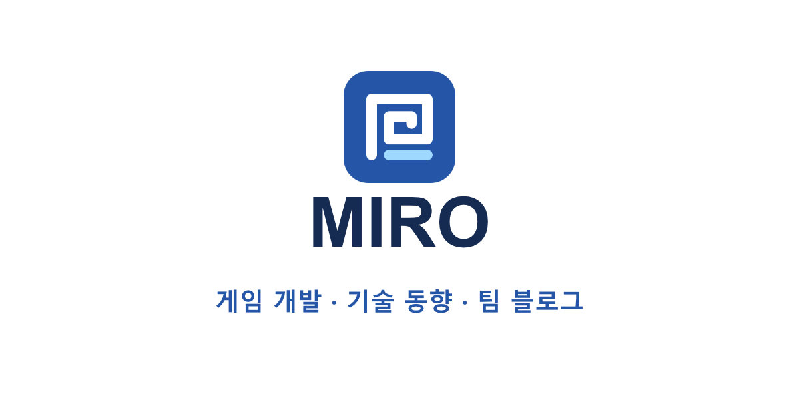
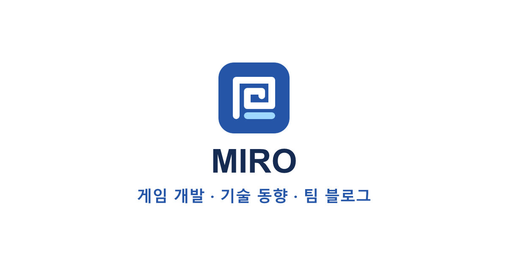
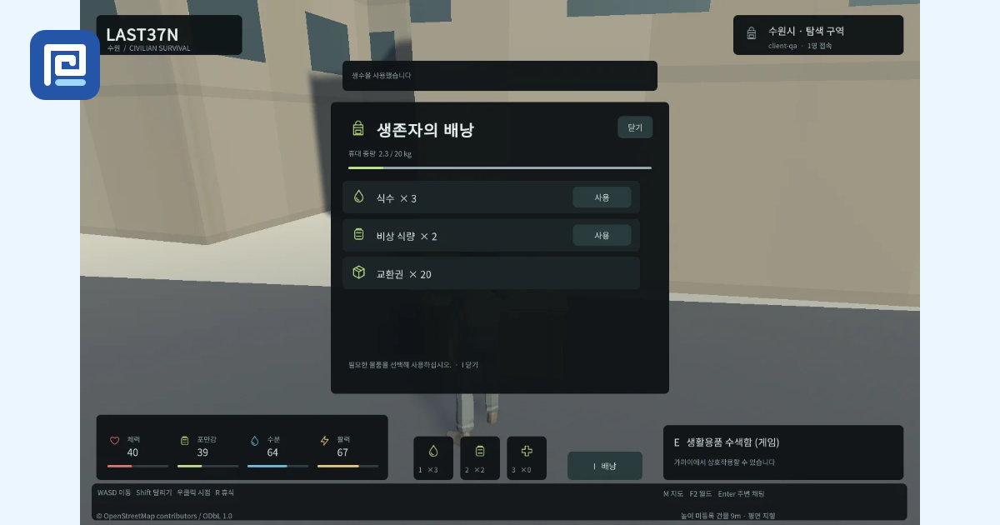
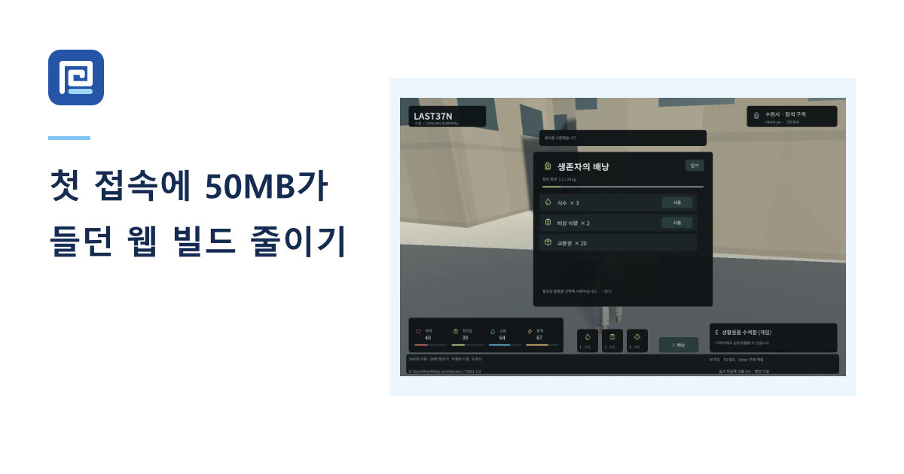
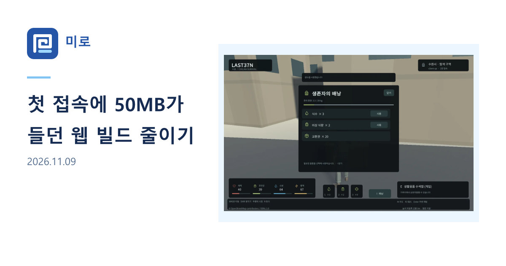

Tracefolio REPORTS & ISSUES
Tracefolio REPORTS & ISSUES미로 블로그의 라이트 테마 OG 카드 개편
검증 대기흰 배경의 홈 카드와 제목·썸네일·발행일을 담은 게시글 카드 153장을 Affinity에서 제작했습니다.
작업 결과
홈은 중앙 로고, 작아진 MIRO, 소개 문구로 구성했습니다. 게시글은 로고 옆에 미로, 제목 아래에 발행일을 두고 썸네일의 종횡비를 유지합니다.
변경 내용
적용 내용
홈 간격 조정 전과 후
 
게시글의 썸네일 중심 카드와 최종 카드
  
build.mjs의 socialMetadata는 홈과 각 게시글의 Affinity JPEG를 찾아 og:image를 설정합니다. 전용 카드가 없는 글은 기존 썸네일을 사용하며, 썸네일까지 없으면 제목·설명 위주의 카드로 표시합니다.
const image = fs.existsSync(custom) ? '/social/'+file : cover && !cover.icon ? cover.src : '';
if(image.startsWith('/social/')) write(image.slice(1),fs.readFileSync(custom));
공개용 대화 요약
- 사용자: 사이트의 하늘색·라이트 테마와 첨부의 파란 로고를 기준으로 홈과 게시글 OG를 재구성해 달라고 요청했습니다.
- 사용자 원문: “MIRO가 위에는 너무 붙었고, 아래랑은 너무 떨어졌꼬, 그리고 폰트가 너무 큰 듯”
- 사용자 원문: “음 게시물 og 카드가 좀 거슬리는데 게시물 제목이랑 이미지 적당히 화면 안에 들어가게 구성 가능?”
- 사용자 원문: “로고 옆에 미로 적어주면 좋을 듯 제목 아래는 작게 날짜 적으면 좋을 것 같고”
- AI: 홈은 MIRO를 105px에서 78px로 줄였습니다. 게시글 제목은 단어 단위로 줄바꿈하고, 발행일은 시각을 제외한 YYYY.MM.DD로 표시했습니다.
검증
Affinity 3.3.3에서 재출력한 실제 JPEG를 확인했습니다. 홈과 게시글 예시의 편집 원본을 다시 열었고 미저장 변경이 없었습니다. 1200×630 출력 154개와 로컬 빌드의 OG 참조 및 JPEG 바이트 일치를 대조했습니다.
남은 사항
공개 블로그의 배포는 이 작업에서 수행하지 않았습니다. 현재 게시글 153개는 모두 썸네일이 있어 썸네일 없는 운영 게시글 사례는 미확인입니다. 교훈은 이 블로그의 OG 디자인 기준에 추가했습니다.
작업 시간
- 제안 시간: 라이트 테마 2
4분, 홈 간격 조정 약 1분, 게시글 레이아웃 35분, 미로·날짜 적용 2~4분. 중앙 아카이브 배포 대기 별도. - 실제로 완료된 시간: 게시글 제목·썸네일 레이아웃 작업 19:07:08 KST 시작. 미로와 발행일 추가를 포함한 로컬 검증 완료 19:13:04 KST(약 5분 56초). 중앙 아카이브 배포 대기 별도.
- XERJ: 미사용 — 코드 검색 근거가 제공되지 않았습니다.